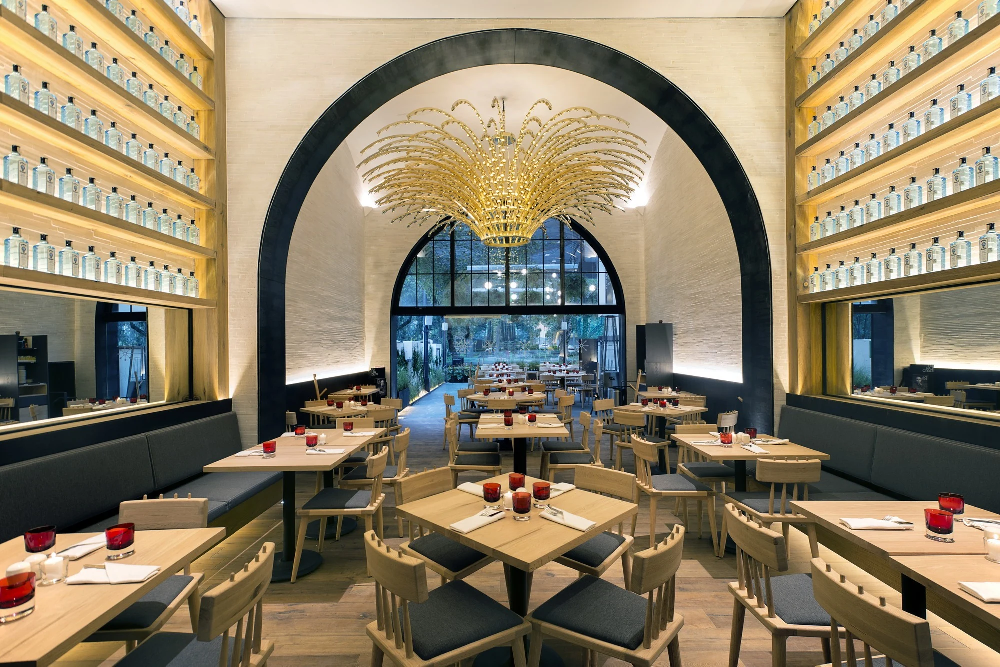
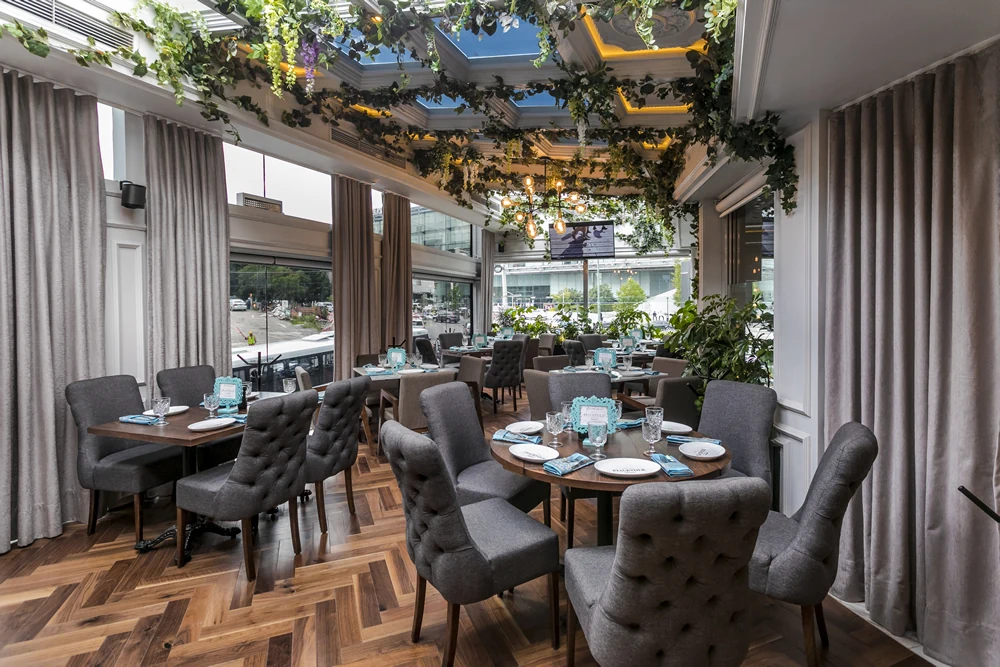
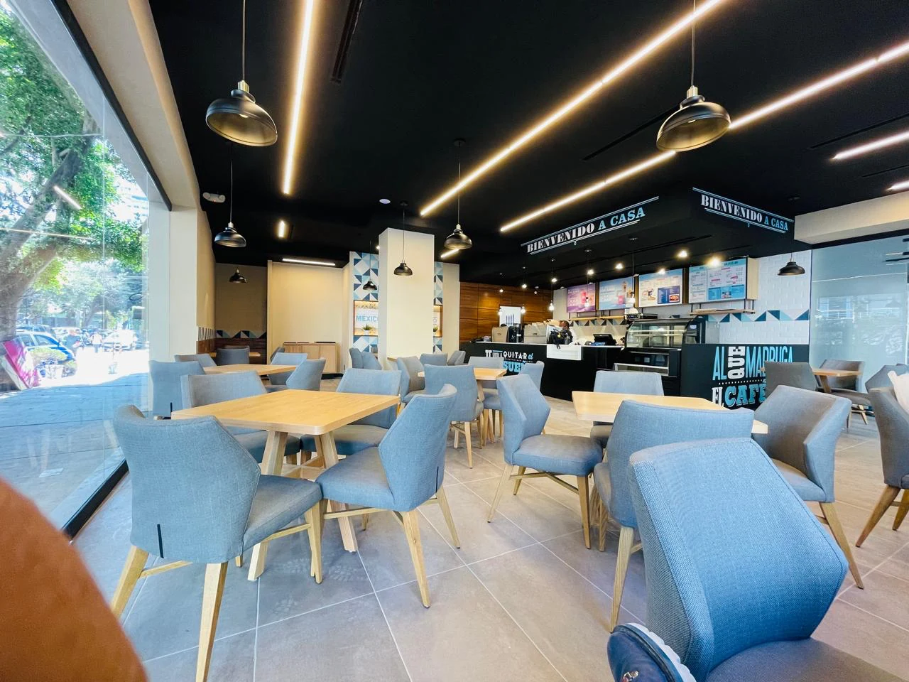
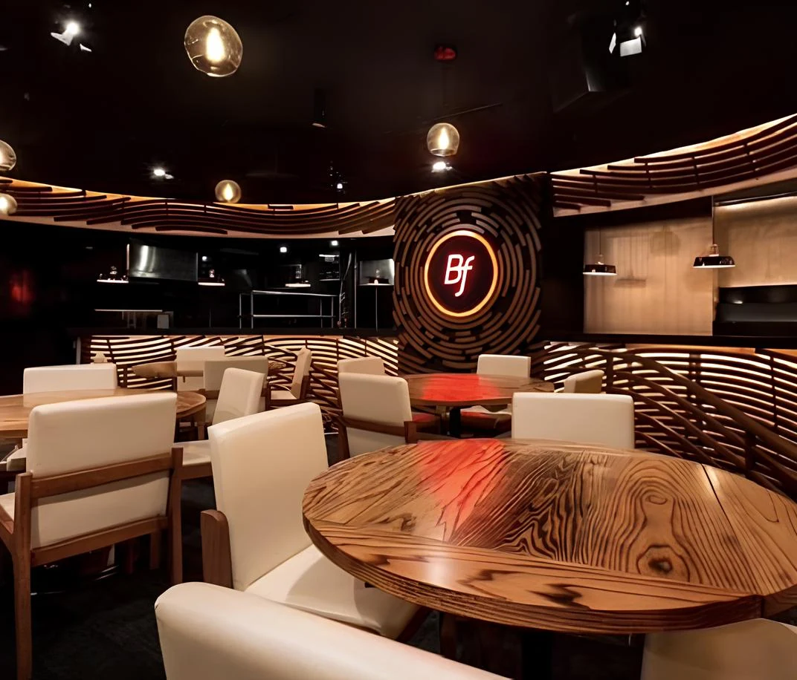
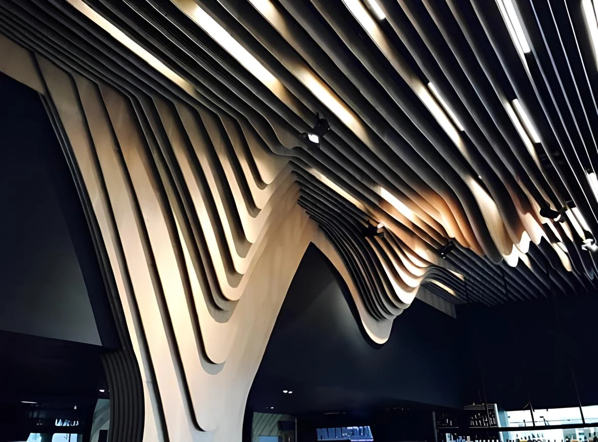
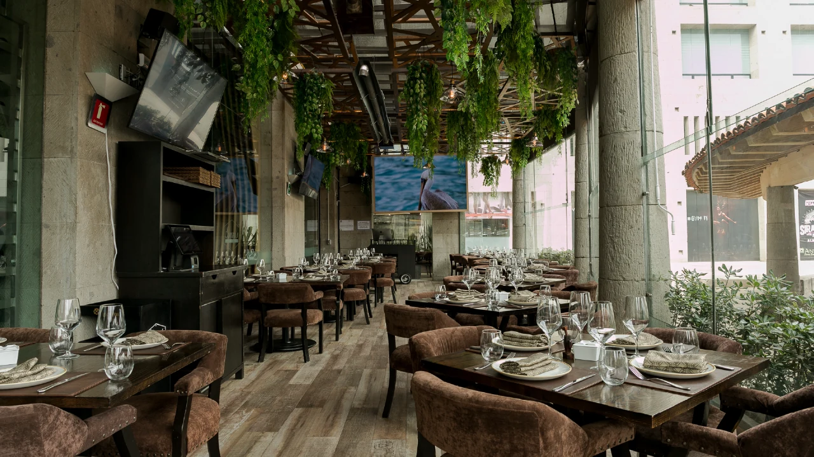

Construcción, remodelación y diseño de espacios comerciales, corporativos y residenciales en toda la República Mexicana.
Dieciocho años construyendo espacios para Chanel, Nutrisa y Waldo's, junto a despachos como Sordo Madaleno, Kababie Arquitectos y Esrawe Studio.
Somos una empresa mexicana que nace de la experiencia en arquitectura residencial y comercial, ingeniería especializada, logística y telecomunicaciones, tanto para el sector privado como para el público.
Conocer Atmosfera

Piacevole Santa Fe
Diseño y reacondicionamiento integral de restaurante: obra general, instalaciones, acabados, iluminación y carpintería de autor.


Cielito Querido Café
Creación de cafetería de acceso público: albañilerías, instalaciones electromecánicas, acabados, cancelería y herrería.



Bar BF Santa Fe
Diseño y reacondicionamiento de dinner club: obra general, instalaciones, acabados, iluminación y carpintería a medida.

Sonora Asador Añejo
Diseño y reacondicionamiento de restaurante: obra general, instalaciones, acabados, iluminación y carpintería.
- Sordo Madaleno Arquitectos
- Kababie Arquitectos
- Esrawe Studio
- Niz + Chauvet
- Construtech
- Desarrollos Confianza
Construcción y remodelación
Obra nueva y reacondicionamiento integral, comercial y habitacional.
Acabados finos
Especialistas en carpintería, piedra y superficies de autor.
Instalaciones e ingeniería
Todo lo que hace funcionar un espacio, resuelto con precisión.
Fibra óptica y telecomunicaciones
Más de 8 años construyendo la red que conecta al país.
Urbanización y logística
Proyectos de infraestructura pública y comunitaria a escala nacional.
Hablemos de tu proyecto.
Cuéntanos qué estás construyendo o remodelando y te contactaremos para agendar una visita o llamada.
Solicitar cotizaciónVer portafolio